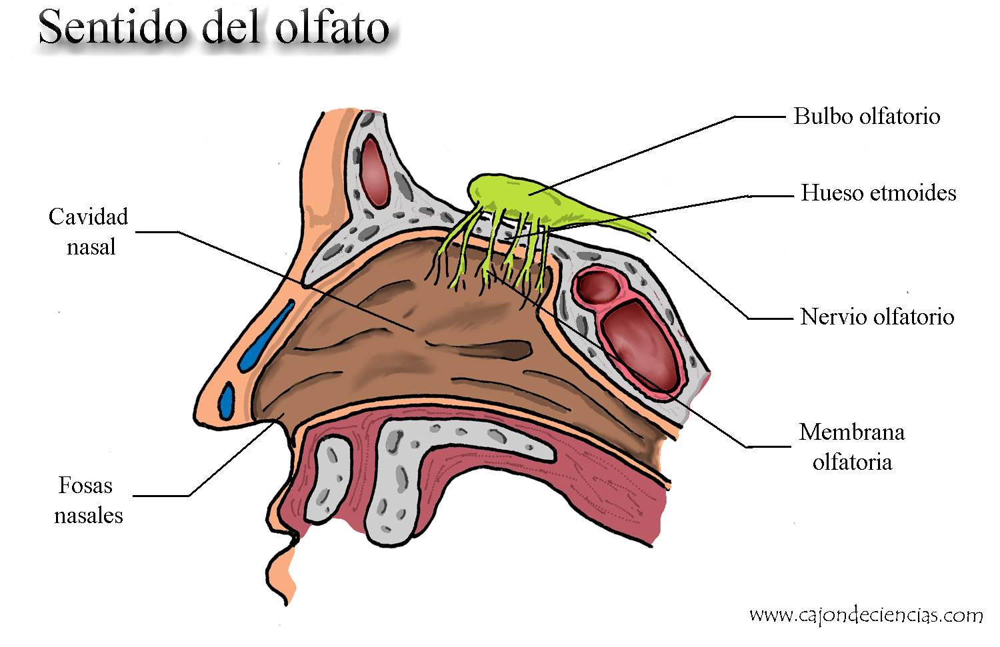
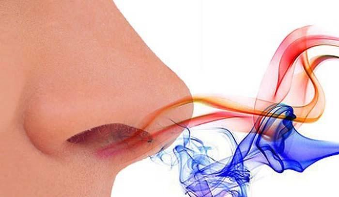
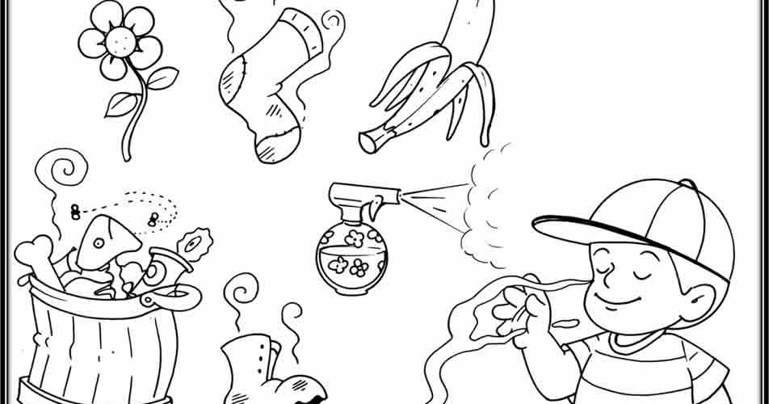
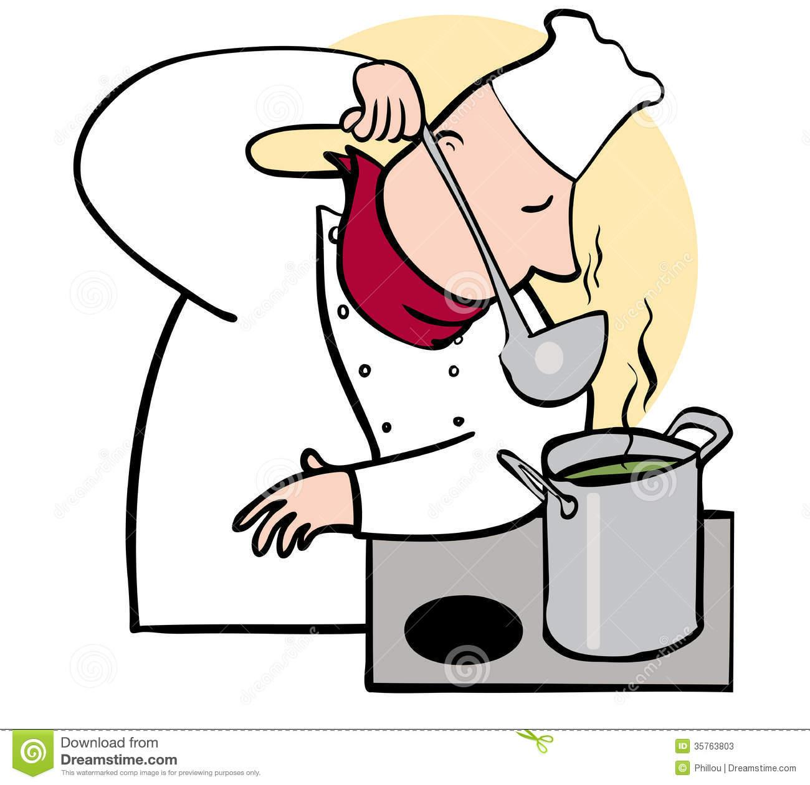

El olfato es el sentido encargado de detectar y procesar los olores.
Se ha definido el olfato como un sentido químico en el que actúan como estimulante las partículas aromáticas u odoríferas desprendidas de los cuerpos volátiles,
que a través del aire inspirado entran en contacto con el epitelio olfatorio situado en la nariz.
|
|  |
 |
|
SENTIDO DEL OLFATO
|
|  |
|
 |
El olfato tiene importantes funciones en los seres vivos, entre ellas evaluar el estado, tipo y
calidad nutritiva de los alimentos, detectar peligros medioambientales como el humo o el nivel de humedad, reconocer un territorio
demarcado odoríficamente y relacionar el olor con el recuerdo de lo que representa.
|